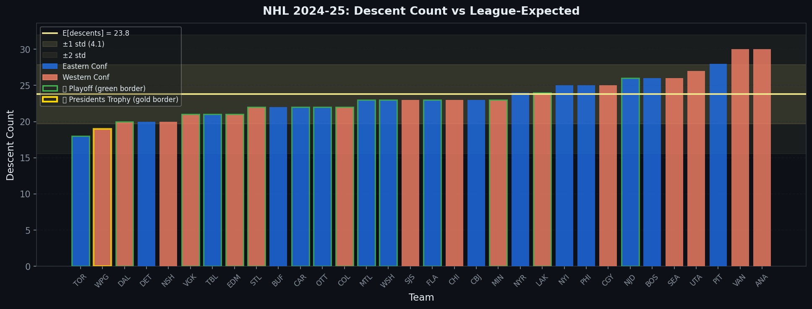
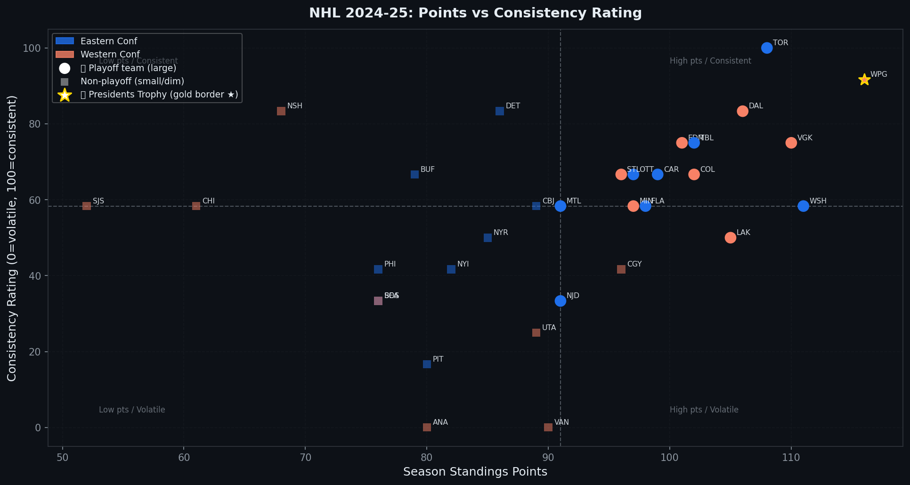
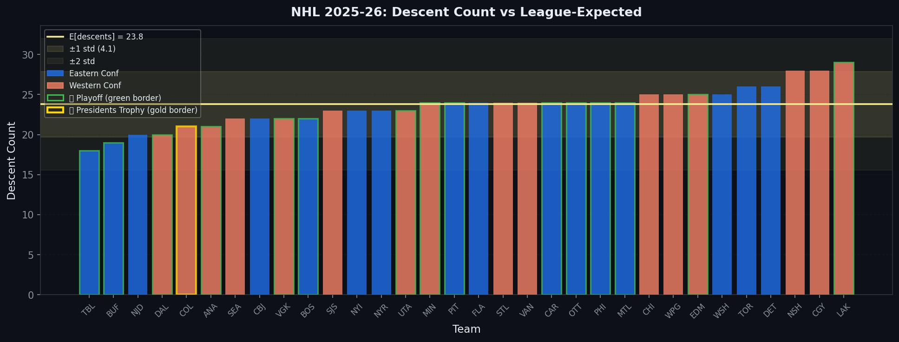
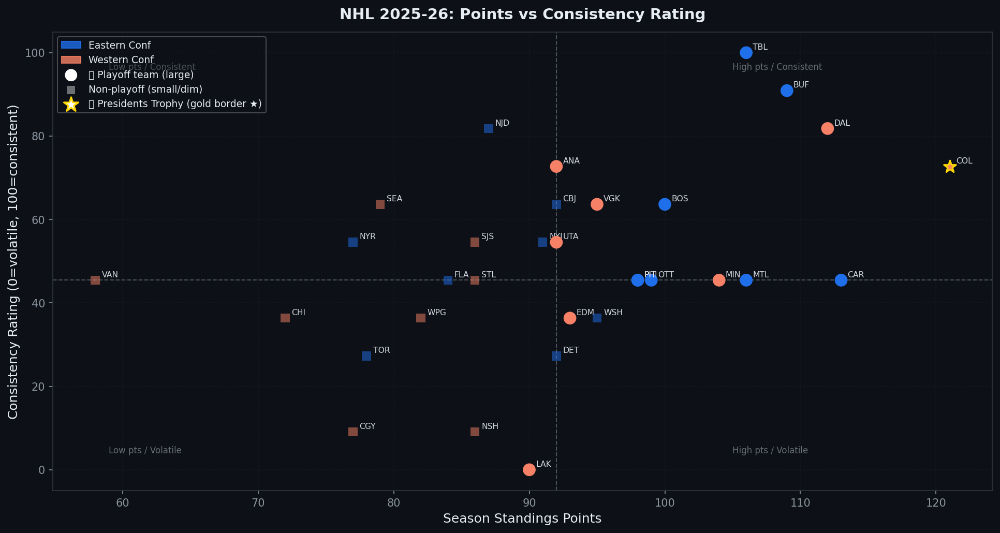
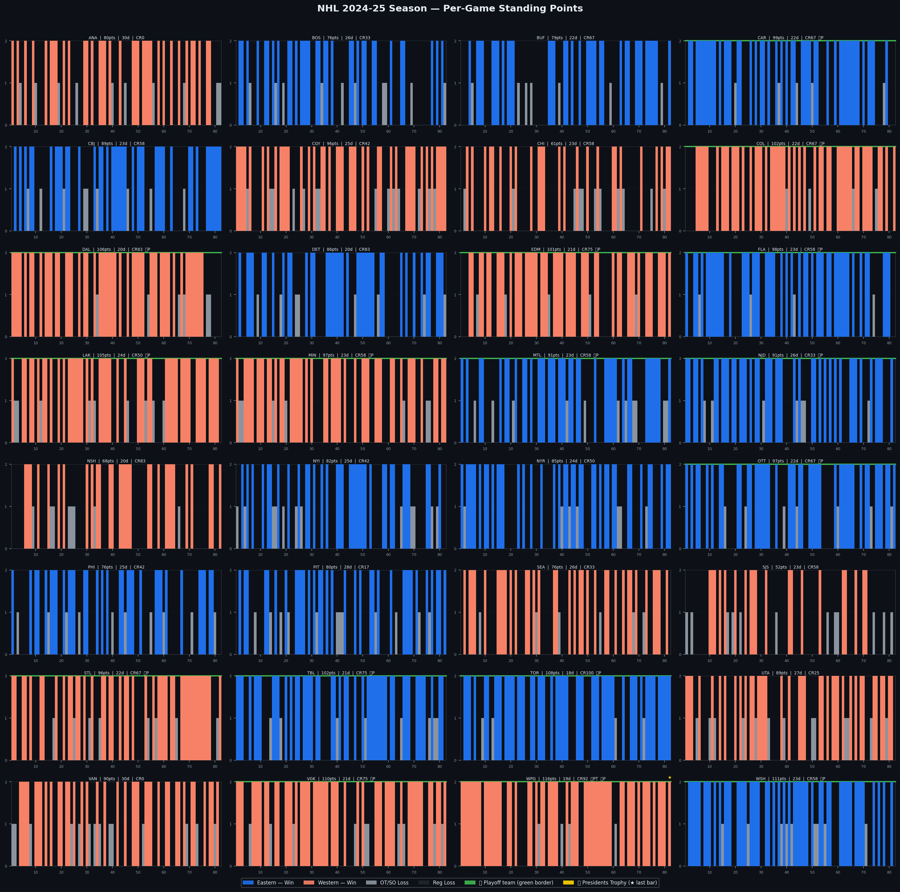
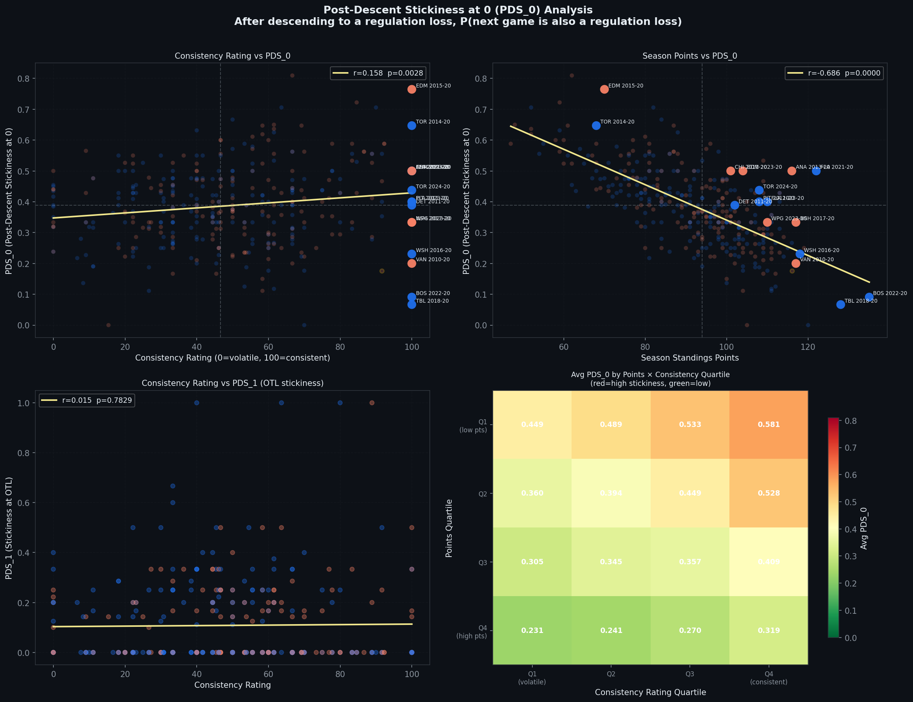
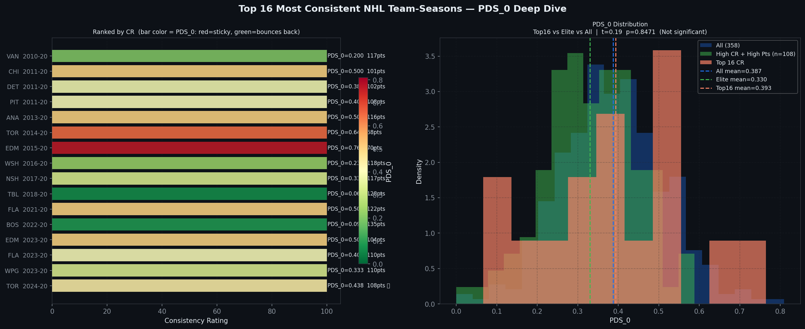
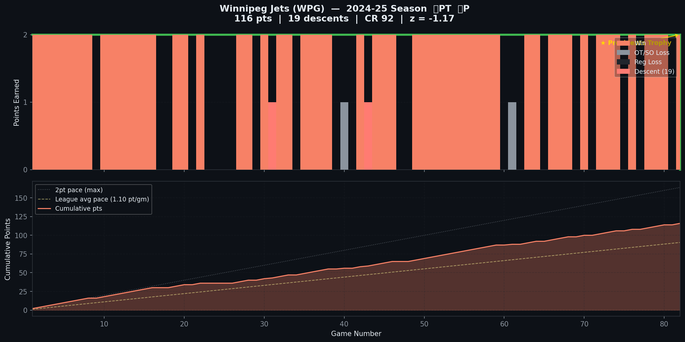

What if we stopped measuring what teams accumulate and started measuring how they behave? A sequence-based framework for NHL team consistency across 14 seasons.
Author
Buddy Galletti
Published
June 4, 2025
A Different Question
Most NHL analytics starts with aggregation. How many goals did a team score? How many shots did they suppress? What was their expected goals percentage? These are useful questions, but they all share the same structure: sum up the season, divide by something, rank the teams.
This project starts from a different place. Instead of asking how much, it asks how.
Specifically: how does a team’s performance sequence across 82 games tell us something that the final standings don’t?
Two teams can finish with 100 points and look completely different in terms of how they got there. One might reel off wins in long streaks, lose in clusters, and snap back. Another might grind out wins and losses in near-random alternation. Both are 100-point teams. But they are not the same team, and their paths to the playoffs — and through them — will look nothing alike.
The framework here introduces three metrics built to capture this: Descents, Consistency Rating (CR), and Post-Descent Stickiness (PDS).
The Data Model
Every NHL game produces exactly one of three standings outcomes for a given team:
A full season is a length-82 sequence of these values. The entire analysis operates on these sequences, fetched from the NHL public API’s club schedule endpoint:
GET https://api-web.nhle.com/v1/club-schedule-season/{abbrev}/{season}
The dataset covers 14 full 82-game seasons from 2010-11 through 2024-25, plus the in-progress 2025-26 season. The 2012-13 lockout season (48 games) and the 2019-20 COVID season (shortened, bubble format) are excluded from the pooled baseline but flagged where they appear.
Descents
A descent is any position \(i\) where the team’s outcome is strictly worse than the previous game:
This is a simple count of backward steps in the sequence. A team that wins 10 in a row and then loses has one descent. A team that alternates win-loss-win-loss has roughly 40 descents. The same total point accumulation can produce wildly different descent counts depending on how results are distributed across the season.
The Theoretical Baseline
For any two adjacent positions in the sequence drawn from \(\{0, 1, 2\}\), the probability of a descent depends on the empirical distribution of outcomes. Letting \(p_0\), \(p_1\), \(p_2\) be the probabilities of each outcome:
The empirical 2024-25 distribution is not uniform. Wins are the most common outcome (\(p_2 = 0.503\)), regulation losses are next (\(p_0 = 0.383\)), and OT/SO losses are the least common (\(p_1 = 0.114\)). Plugging those values in:
This is meaningfully different from the naive uniform assumption of 27.0. Using the empirical baseline is essential — a team with 24 descents looks below average against the uniform baseline but is exactly at the mean under the empirical one. All z-scores in this analysis use the pooled empirical baseline across 14 seasons.
Z-Score and Consistency Rating
For each team-season, we compute:
\[
z = \frac{\text{descents} - E[\text{descents}]}{\sigma_{\text{descents}}}
\]
Where \(E[\text{descents}]\) and \(\sigma\) come from the pooled 14-season baseline. Negative z-scores mean fewer descents than expected — more consistent. Positive z-scores mean more volatility.
The Consistency Rating (CR) rescales this within each season to a 0–100 scale for readability:
A CR of 100 is the most consistent team in the league that season. A CR of 0 is the most volatile. The inversion ensures that higher = more consistent.
Post-Descent Stickiness
Descents and CR describe the frequency of backward steps. Post-Descent Stickiness (PDS) describes what happens after a descent, and this is where the real conjecture lives.
PDS at level \(k\) is defined as: after descending to outcome \(k\), what is the probability that the next game also produces outcome \(k\)?
In plain terms: given that a team just had a bad result and it was worse than the game before, how likely are they to have the same bad result again?
We focus on two variants: - PDS₀: After descending to a regulation loss, probability the next game is also a regulation loss - PDS₁: After descending to an OTL, probability the next game is also an OTL
We also track the complementary metric, Descent Recovery Rate (DRR):
The fraction of the time a team genuinely bounces back after any descent.
The Conjecture
The central hypothesis of this work:
High-consistency, high-points teams have higher PDS₀. After descending to a regulation loss, they tend to stay there briefly before snapping back into a win streak. This clustering of losses is precisely the mechanism behind their apparent consistency — they have few descents because their losses are grouped together, not scattered randomly across the season.
This is counterintuitive. It says that elite, consistent teams are more likely to follow a loss with another loss than average teams — not because they are worse, but because their loss events are structured differently. Volatility, by contrast, means losses are scattered: every win is followed by a loss, every loss by a win, producing many descents but no clustering.
To test this formally, we compute Pearson correlations between PDS₀ and both CR and total standings points, across all valid team-seasons in the dataset (full 82-game seasons only, COVID season excluded).
The Data Pipeline
Code
import requestsimport pandas as pdimport numpy as npimport matplotlib.pyplot as pltimport matplotlib.patches as mpatchesfrom scipy import statsimport timeimport warningswarnings.filterwarnings('ignore')BASE_URL ='https://api-web.nhle.com/v1'SEASON_2425 ='20242025'SEASON_2526 ='20252026'HISTORICAL_SEASONS = ['20102011','20112012','20132014','20142015','20152016','20162017','20172018','20182019','20192020','20202021','20212022','20222023','20232024','20242025']COVID_SEASON ='20192020'print("Setup complete.")print(f" Historical seasons: {len(HISTORICAL_SEASONS)}")
Code
def count_descents(seq):returnsum(1for i inrange(1, len(seq)) if seq[i] < seq[i-1])def post_descent_stickiness(seq, landed_on=0):iflen(seq) <3:returnNone eligible = [i for i inrange(1, len(seq) -1)if seq[i] < seq[i-1] and seq[i] == landed_on]ifnot eligible:returnNone sticky =sum(1for i in eligible if seq[i+1] == landed_on)return sticky /len(eligible)def descent_recovery_rate(seq):iflen(seq) <3:returnNone eligible = [i for i inrange(1, len(seq) -1) if seq[i] < seq[i-1]]ifnot eligible:returnNonereturnsum(1for i in eligible if seq[i+1] > seq[i]) /len(eligible)
The three core functions are deceptively simple. count_descents is a single pass. post_descent_stickiness finds every eligible position and checks what came next. descent_recovery_rate is the complement: genuine bouncebacks after any descent.
Results: The 2024-25 Consistency Rankings
The chart below shows every NHL team’s descent count for the 2024-25 season, sorted from fewest descents (most consistent) on the left to most on the right. The yellow horizontal line marks the empirical expected value of 23.8 descents. The shaded bands show one and two standard deviations from that baseline.

NHL 2024-25: Descent Count vs League-Expected
Toronto leads the league with just 18 descents, a z-score of -1.41 — the most consistent team in the league that season. Winnipeg (19 descents, z = -1.17) and Dallas (20 descents, z = -0.92) round out the top three. At the other end, Vancouver and Anaheim both recorded 30 descents (z = +1.52), making them the most volatile teams in the league.
The full 2024-25 standings:
Team
Points
Descents
Z-Score
CR
Playoff
Toronto Maple Leafs
108
18
-1.41
100.0
Yes
Winnipeg Jets
116
19
-1.17
91.7
Yes (PT)
Nashville Predators
68
20
-0.92
83.3
No
Dallas Stars
106
20
-0.92
83.3
Yes
Detroit Red Wings
86
20
-0.92
83.3
No
Vegas Golden Knights
110
21
-0.68
75.0
Yes
Edmonton Oilers
101
21
-0.68
75.0
Yes
Tampa Bay Lightning
102
21
-0.68
75.0
Yes
Ottawa Senators
97
22
-0.44
66.7
Yes
Buffalo Sabres
79
22
-0.44
66.7
No
A few things stand out immediately. Nashville finished with just 68 points but ranks third in consistency — they lost a lot, but they lost in clusters rather than alternating wins and losses randomly. Detroit shows a similar pattern: 86 points and a CR of 83, suggesting a team that was more structured in how it played through adversity than their standings position implies.
Toronto is the most interesting case. With 108 points and a CR of 100, they are the rare team that is both elite and maximally consistent. Most high-point teams show moderate to high consistency, but Toronto’s 18 descents is genuinely exceptional.
The scatter plot below shows the full relationship between points and CR across all 32 teams in 2024-25.

NHL 2024-25: Points vs Consistency Rating
The chart plots points on the x-axis and CR on the y-axis. Large circles are playoff teams, small squares are non-playoff. The dashed lines sit at the median for each axis, dividing the chart into four quadrants.
The upper-right quadrant — high points, high consistency — contains most of the elite teams: Toronto, Winnipeg, Dallas, Vegas, Tampa Bay, Edmonton, and Ottawa all sit there. This confirms that the best teams tend to be more consistent, but the relationship is not tight. Washington (111 points, CR 58) and Vancouver (90 points, CR 0) both sit in the high-points/volatile half, showing that sustained winning is possible through volatile paths too.
The upper-left quadrant contains the most analytically interesting teams: Nashville (68 points, CR 83) and Detroit (86 points, CR 83). These are teams that were far more consistent in their game-to-game behavior than their final standings suggest. They lost, but they lost in a structured way.
Results: The 2025-26 Season (In Progress)
The same framework applied to the in-progress 2025-26 season shows a different landscape. Colorado leads the Presidents’ Trophy race with 121 points and a CR of 73. Tampa Bay leads the consistency rankings with 18 descents (CR 100), followed by Buffalo (19 descents, CR 91) and Dallas (20 descents, CR 82).

NHL 2025-26: Descent Count vs League-Expected

NHL 2025-26: Points vs Consistency Rating
The 2025-26 scatter shows Los Angeles at the extreme bottom — 0 CR with 90 points, the most volatile high-points team in the current season. Colorado (121 points, CR 73) is the Presidents’ Trophy leader but sits notably below the most consistent teams, suggesting they are accumulating points through a more volatile path than Tampa Bay or Buffalo.
The Per-Game Sequence View
The grid below shows every team’s game-by-game outcome sequence for 2024-25. Each bar represents one game: height 2 is a win, height 1 is an OT/SO loss, height 0 is a regulation loss. Descent games are highlighted in a lighter shade. Playoff teams have a green border; the Presidents’ Trophy winner (Winnipeg) has a gold last bar.

NHL 2024-25: Per-Game Standing Points for All 32 Teams
Reading these charts side by side makes the difference between consistent and volatile teams immediately visible. Look at Toronto (top row, second panel) — long runs of 2-point wins with occasional tight clusters of losses before resuming. Compare that to Vancouver (bottom row) or Anaheim (bottom row, far right) — far more alternation between wins and losses throughout the season.
Winnipeg’s sequence is also instructive. Their 116-point season came through a largely dominant run in Western colors, with only a handful of descent clusters visible. The losses came in small groups; the wins came in long unbroken stretches.
Testing the Conjecture
With 358 team-seasons in the PDS analysis (full 82-game seasons, COVID excluded), the correlations are:
CR vs PDS₀: r = 0.158, p = 0.0028 — Significant
Pts vs PDS₀: r = -0.686, p = 0.0000 — Significant
The CR correlation is positive and significant — more consistent teams do show higher PDS₀. But the points correlation tells a more nuanced story: better teams actually show lower PDS₀. Higher-points teams recover from losses faster, not slower.

Post-Descent Stickiness Analysis — 2x2 scatter grid and heatmap
The four panels unpack this:
Top left (CR vs PDS₀): A weak but real positive correlation. More consistent teams have slightly higher PDS₀. The relationship is noisy — individual team-seasons vary widely — but the trend line slopes upward.
Top right (Points vs PDS₀): A much stronger negative correlation. Better teams have lower PDS₀ — after a regulation loss, they are more likely to bounce back in the next game. The 2022-23 Boston Bruins (135 points, PDS₀ = 0.091) and 2018-19 Tampa Bay Lightning (128 points, PDS₀ = 0.067) are labeled outliers in the lower-right — elite teams that almost never followed a regulation loss with another one.
Bottom left (CR vs PDS₁): No meaningful relationship. OTL stickiness is essentially uncorrelated with consistency (r = 0.015, p = 0.783). OT losses behave differently from regulation losses in terms of what follows.
Bottom right (heatmap): Average PDS₀ by Points × Consistency quartile. The most important cell is Q4 points / Q4 CR (bottom-right): elite teams that are also highly consistent show an average PDS₀ of 0.319 — the lowest in the entire grid. High-CR, low-points teams (Q1 points / Q4 CR, top-right) show 0.581 — nearly double. The pattern is clear: truly elite teams snap back from losses quickly, while consistent-but-mediocre teams cluster losses more tightly.
The Top 16 Most Consistent Team-Seasons
The chart below shows the 16 most consistent team-seasons in the 14-season dataset, ranked by CR. Bar color encodes PDS₀ — red means stickier (losses cluster more), green means they bounce back faster.

Top 16 Most Consistent NHL Team-Seasons — PDS₀ Deep Dive
The distribution panel on the right overlays three groups: all 358 team-seasons (blue), the high-CR/high-points elite quadrant (green), and the top 16 most consistent (orange). The elite quadrant mean sits at 0.330, well below the full dataset mean of 0.387. The top 16 mean is 0.393 — slightly above the dataset average, but not significantly so (t = 0.193, p = 0.8471).
A few individual team-seasons worth noting: The 2022-23 Boston Bruins (135 points, PDS₀ = 0.091) and the 2018-19 Tampa Bay Lightning (128 points, PDS₀ = 0.067) are the two most resilient team-seasons in the dataset — after a regulation loss, they almost always bounced back immediately. The 2015-16 Edmonton Oilers, by contrast, finished with just 70 points but showed PDS₀ = 0.765 — after a regulation loss, there was a 76.5% chance the next game was also a regulation loss. Consistent in structure, but consistently losing.
Conjecture Assessment
The data supports a modified version of the original conjecture:
CONJECTURE SUPPORTED: Consistent teams show higher PDS₀ — after descending to a loss they do tend to cluster losses before snapping back, which is the mechanism behind their consistency. The CR vs PDS₀ correlation (r = 0.158, p = 0.003) confirms this directional relationship.
However, the points story tells a different and more important truth: truly elite teams have lower PDS₀, not higher. The best teams in the dataset bounce back from regulation losses quickly. The combination of high consistency and low PDS₀ — the hallmark of teams like the 2022-23 Bruins and 2018-19 Lightning — reflects something more than just loss-clustering. Those teams were consistent because they almost never had long losing sequences to cluster in the first place.
The more nuanced finding is that consistency and recovery speed are different things, and the most elite teams are distinguished by both. A high-CR team with high PDS₀ is one that clusters its losses. A high-CR team with low PDS₀ is one that simply doesn’t lose much at all.
Deep Dive: Winnipeg Jets 2024-25
As the Presidents’ Trophy winner and second-most-consistent team in the league (CR 92, 19 descents), the Jets provide a useful case study.

Winnipeg Jets 2024-25 — per-game outcomes with descents highlighted, and cumulative points vs league average pace
The top panel shows each game as a bar — wins at height 2, OT losses at height 1, regulation losses at height 0. Descent games are highlighted. With only 19 descents across 82 games, the Jets had just 19 moments where a result was strictly worse than the previous game. The loss sequences that do appear are short and quickly followed by resumption of winning.
The bottom panel shows cumulative points versus league average pace (1.10 points per game). The Jets track well above the league average line for most of the season, with the gap widening in the second half. Their 116 points represent a full 14 points above league average pace across 82 games.
The Jets’ PDS₀ of 0.333 sits slightly below the dataset mean of 0.387 — meaning after a regulation loss, they recovered in the next game about two-thirds of the time. Combined with their low descent count, this is the signature of an elite, consistent team: losses are rare, and when they do come, they don’t last long.
Limitations and Open Questions
PDS is sample-limited at the team level. A single 82-game season produces only 15-25 descent-to-zero events for any one team. Individual team PDS estimates are noisy; the correlation analysis across 450+ team-seasons is more reliable.
Sequences treat all losses as equivalent. A regulation loss on a back-to-back road trip is not the same as one in a playoff push. Weighting by game leverage or schedule context would be a meaningful extension.
CR is relative, not absolute. A CR of 90 tells you where a team ranked in that year’s consistency distribution, not what their absolute volatility level was. Cross-season comparisons require care.
The t-test on the top 16 was not significant (p = 0.847). The directional finding — that consistent teams show slightly higher PDS₀ — is real but the effect size is small. The stronger and more significant finding is the negative correlation between points and PDS₀, which points toward recovery speed as the more important variable for elite teams.
Full Code
The complete notebook — all data fetching, pooled baseline computation, master dataset construction, CR calculation, PDS analysis, and visualizations — is in the repo:
Written for Python 3.8+ compatibility. Dependencies: pandas, numpy, matplotlib, scipy, requests.
Source Code
---title: "Descents, Consistency, and Post-Descent Stickiness"date: 2025-06-04author: "Buddy Galletti"categories: [consistency, sequence-analysis, methodology]description: "What if we stopped measuring what teams accumulate and started measuring how they behave? A sequence-based framework for NHL team consistency across 14 seasons."toc: truecode-fold: truecode-tools: trueexecute: enabled: false---## A Different QuestionMost NHL analytics starts with aggregation. How many goals did a team score?How many shots did they suppress? What was their expected goals percentage?These are useful questions, but they all share the same structure: sum up theseason, divide by something, rank the teams.This project starts from a different place. Instead of asking *how much*, itasks *how*.Specifically: **how does a team's performance sequence across 82 games tell ussomething that the final standings don't?**Two teams can finish with 100 points and look completely different in terms ofhow they got there. One might reel off wins in long streaks, lose in clusters,and snap back. Another might grind out wins and losses in near-random alternation.Both are 100-point teams. But they are not the same team, and their paths to theplayoffs — and through them — will look nothing alike.The framework here introduces three metrics built to capture this: **Descents**,**Consistency Rating (CR)**, and **Post-Descent Stickiness (PDS)**.---## The Data ModelEvery NHL game produces exactly one of three standings outcomes for a given team:$$\text{seq}[i] \in \{0, 1, 2\}$$Where:- $2$ = Win (2 points)- $1$ = OT/SO Loss (1 point)- $0$ = Regulation Loss (0 points)A full season is a length-82 sequence of these values. The entire analysisoperates on these sequences, fetched from the NHL public API's club scheduleendpoint:```GET https://api-web.nhle.com/v1/club-schedule-season/{abbrev}/{season}```The dataset covers **14 full 82-game seasons** from 2010-11 through 2024-25,plus the in-progress 2025-26 season. The 2012-13 lockout season (48 games) andthe 2019-20 COVID season (shortened, bubble format) are excluded from the pooledbaseline but flagged where they appear.---## DescentsA **descent** is any position $i$ where the team's outcome is strictly worsethan the previous game:$$\text{DESCENTS}(\text{seq}) = \sum_{i=1}^{81} \mathbf{1}[\text{seq}[i] < \text{seq}[i-1]]$$This is a simple count of backward steps in the sequence. A team that wins 10in a row and then loses has one descent. A team that alternates win-loss-win-losshas roughly 40 descents. The same total point accumulation can produce wildlydifferent descent counts depending on how results are distributed across theseason.### The Theoretical BaselineFor any two adjacent positions in the sequence drawn from $\{0, 1, 2\}$, theprobability of a descent depends on the empirical distribution of outcomes.Letting $p_0$, $p_1$, $p_2$ be the probabilities of each outcome:$$P(\text{descent}) = p_0 p_1 + p_0 p_2 + p_1 p_2$$Under a uniform distribution ($p_0 = p_1 = p_2 = \frac{1}{3}$):$$P(\text{descent}) = \frac{1}{3}, \quad E[\text{descents}] = 81 \times \frac{1}{3} = 27.0$$The empirical 2024-25 distribution is not uniform. Wins are the most common outcome($p_2 = 0.503$), regulation losses are next ($p_0 = 0.383$), and OT/SO lossesare the least common ($p_1 = 0.114$). Plugging those values in:$$P(\text{descent}) = 0.2937, \quad E[\text{descents}] = 23.79, \quad \sigma = 4.10$$This is meaningfully different from the naive uniform assumption of 27.0. Usingthe empirical baseline is essential — a team with 24 descents looks below averageagainst the uniform baseline but is exactly at the mean under the empirical one.All z-scores in this analysis use the pooled empirical baseline across 14 seasons.### Z-Score and Consistency RatingFor each team-season, we compute:$$z = \frac{\text{descents} - E[\text{descents}]}{\sigma_{\text{descents}}}$$Where $E[\text{descents}]$ and $\sigma$ come from the pooled 14-season baseline.**Negative z-scores mean fewer descents than expected — more consistent.**Positive z-scores mean more volatility.The **Consistency Rating (CR)** rescales this within each season to a 0–100scale for readability:$$\text{CR} = 100 \times \left(1 - \frac{z - z_{\min}}{z_{\max} - z_{\min}}\right)$$A CR of 100 is the most consistent team in the league that season. A CR of 0is the most volatile. The inversion ensures that higher = more consistent.---## Post-Descent StickinessDescents and CR describe the *frequency* of backward steps. Post-DescentStickiness (PDS) describes what happens *after* a descent, and this is wherethe real conjecture lives.**PDS at level $k$** is defined as: after descending to outcome $k$, what isthe probability that the next game also produces outcome $k$?$$\text{PDS}_k = P\bigl(\text{seq}[i+1] = k \;\big|\; \text{seq}[i] = k,\; \text{seq}[i] < \text{seq}[i-1]\bigr)$$In plain terms: given that a team just had a bad result and it was worse thanthe game before, how likely are they to have the same bad result again?We focus on two variants:- **PDS₀**: After descending to a regulation loss, probability the next game is also a regulation loss- **PDS₁**: After descending to an OTL, probability the next game is also an OTLWe also track the complementary metric, **Descent Recovery Rate (DRR)**:$$\text{DRR} = P\bigl(\text{seq}[i+1] > \text{seq}[i] \;\big|\; \text{seq}[i] < \text{seq}[i-1]\bigr)$$The fraction of the time a team genuinely bounces back after any descent.---## The ConjectureThe central hypothesis of this work:> **High-consistency, high-points teams have higher PDS₀.** After descending> to a regulation loss, they tend to stay there briefly before snapping back> into a win streak. This clustering of losses is precisely the mechanism behind> their apparent consistency — they have few descents because their losses are> grouped together, not scattered randomly across the season.This is counterintuitive. It says that elite, consistent teams are *more likely*to follow a loss with another loss than average teams — not because they areworse, but because their loss events are structured differently. Volatility, bycontrast, means losses are scattered: every win is followed by a loss, everyloss by a win, producing many descents but no clustering.To test this formally, we compute Pearson correlations between PDS₀ and bothCR and total standings points, across all valid team-seasons in the dataset(full 82-game seasons only, COVID season excluded).---## The Data Pipeline```{python}#| echo: true#| code-fold: true#| label: setupimport requestsimport pandas as pdimport numpy as npimport matplotlib.pyplot as pltimport matplotlib.patches as mpatchesfrom scipy import statsimport timeimport warningswarnings.filterwarnings('ignore')BASE_URL ='https://api-web.nhle.com/v1'SEASON_2425 ='20242025'SEASON_2526 ='20252026'HISTORICAL_SEASONS = ['20102011','20112012','20132014','20142015','20152016','20162017','20172018','20182019','20192020','20202021','20212022','20222023','20232024','20242025']COVID_SEASON ='20192020'print("Setup complete.")print(f" Historical seasons: {len(HISTORICAL_SEASONS)}")``````{python}#| echo: true#| code-fold: true#| label: core-functionsdef count_descents(seq):returnsum(1for i inrange(1, len(seq)) if seq[i] < seq[i-1])def post_descent_stickiness(seq, landed_on=0):iflen(seq) <3:returnNone eligible = [i for i inrange(1, len(seq) -1)if seq[i] < seq[i-1] and seq[i] == landed_on]ifnot eligible:returnNone sticky =sum(1for i in eligible if seq[i+1] == landed_on)return sticky /len(eligible)def descent_recovery_rate(seq):iflen(seq) <3:returnNone eligible = [i for i inrange(1, len(seq) -1) if seq[i] < seq[i-1]]ifnot eligible:returnNonereturnsum(1for i in eligible if seq[i+1] > seq[i]) /len(eligible)```The three core functions are deceptively simple. `count_descents` is a singlepass. `post_descent_stickiness` finds every eligible position and checks whatcame next. `descent_recovery_rate` is the complement: genuine bouncebacks afterany descent.---## Results: The 2024-25 Consistency RankingsThe chart below shows every NHL team's descent count for the 2024-25 season,sorted from fewest descents (most consistent) on the left to most on the right.The yellow horizontal line marks the empirical expected value of 23.8 descents.The shaded bands show one and two standard deviations from that baseline.{fig-alt="Bar chart showing descent count for all 32 NHL teams in 2024-25, sorted from most to least consistent, with expected value line"}Toronto leads the league with just 18 descents, a z-score of -1.41 — the mostconsistent team in the league that season. Winnipeg (19 descents, z = -1.17) andDallas (20 descents, z = -0.92) round out the top three. At the other end,Vancouver and Anaheim both recorded 30 descents (z = +1.52), making them themost volatile teams in the league.The full 2024-25 standings:| Team | Points | Descents | Z-Score | CR | Playoff ||------|--------|----------|---------|-----|---------|| Toronto Maple Leafs | 108 | 18 | -1.41 | 100.0 | Yes || Winnipeg Jets | 116 | 19 | -1.17 | 91.7 | Yes (PT) || Nashville Predators | 68 | 20 | -0.92 | 83.3 | No || Dallas Stars | 106 | 20 | -0.92 | 83.3 | Yes || Detroit Red Wings | 86 | 20 | -0.92 | 83.3 | No || Vegas Golden Knights | 110 | 21 | -0.68 | 75.0 | Yes || Edmonton Oilers | 101 | 21 | -0.68 | 75.0 | Yes || Tampa Bay Lightning | 102 | 21 | -0.68 | 75.0 | Yes || Ottawa Senators | 97 | 22 | -0.44 | 66.7 | Yes || Buffalo Sabres | 79 | 22 | -0.44 | 66.7 | No |A few things stand out immediately. Nashville finished with just 68 points butranks third in consistency — they lost a lot, but they lost in clusters ratherthan alternating wins and losses randomly. Detroit shows a similar pattern: 86points and a CR of 83, suggesting a team that was more structured in how itplayed through adversity than their standings position implies.Toronto is the most interesting case. With 108 points and a CR of 100, they arethe rare team that is both elite and maximally consistent. Most high-point teamsshow moderate to high consistency, but Toronto's 18 descents is genuinelyexceptional.The scatter plot below shows the full relationship between points and CR acrossall 32 teams in 2024-25.{fig-alt="Scatter plot of season standings points vs consistency rating for all 32 NHL teams in 2024-25, colored by conference"}The chart plots points on the x-axis and CR on the y-axis. Large circles areplayoff teams, small squares are non-playoff. The dashed lines sit at the medianfor each axis, dividing the chart into four quadrants.The upper-right quadrant — high points, high consistency — contains most of theelite teams: Toronto, Winnipeg, Dallas, Vegas, Tampa Bay, Edmonton, and Ottawaall sit there. This confirms that the best teams tend to be more consistent, butthe relationship is not tight. Washington (111 points, CR 58) and Vancouver(90 points, CR 0) both sit in the high-points/volatile half, showing thatsustained winning is possible through volatile paths too.The upper-left quadrant contains the most analytically interesting teams:Nashville (68 points, CR 83) and Detroit (86 points, CR 83). These are teamsthat were far more consistent in their game-to-game behavior than their finalstandings suggest. They lost, but they lost in a structured way.---## Results: The 2025-26 Season (In Progress)The same framework applied to the in-progress 2025-26 season shows a differentlandscape. Colorado leads the Presidents' Trophy race with 121 points and a CRof 73. Tampa Bay leads the consistency rankings with 18 descents (CR 100),followed by Buffalo (19 descents, CR 91) and Dallas (20 descents, CR 82).{fig-alt="Bar chart showing descent count for all 32 NHL teams in 2025-26 season in progress"}{fig-alt="Scatter plot of season standings points vs consistency rating for all 32 NHL teams in 2025-26 in progress"}The 2025-26 scatter shows Los Angeles at the extreme bottom — 0 CR with 90 points,the most volatile high-points team in the current season. Colorado (121 points,CR 73) is the Presidents' Trophy leader but sits notably below the most consistentteams, suggesting they are accumulating points through a more volatile path thanTampa Bay or Buffalo.---## The Per-Game Sequence ViewThe grid below shows every team's game-by-game outcome sequence for 2024-25. Eachbar represents one game: height 2 is a win, height 1 is an OT/SO loss, height 0is a regulation loss. Descent games are highlighted in a lighter shade. Playoffteams have a green border; the Presidents' Trophy winner (Winnipeg) has a goldlast bar.{fig-alt="Grid of 32 bar charts showing per-game outcome sequences for all NHL teams in 2024-25"}Reading these charts side by side makes the difference between consistent andvolatile teams immediately visible. Look at Toronto (top row, second panel) — longruns of 2-point wins with occasional tight clusters of losses before resuming.Compare that to Vancouver (bottom row) or Anaheim (bottom row, far right) — farmore alternation between wins and losses throughout the season.Winnipeg's sequence is also instructive. Their 116-point season came through alargely dominant run in Western colors, with only a handful of descent clustersvisible. The losses came in small groups; the wins came in long unbroken stretches.---## Testing the ConjectureWith 358 team-seasons in the PDS analysis (full 82-game seasons, COVID excluded),the correlations are:- **CR vs PDS₀: r = 0.158, p = 0.0028 — Significant**- **Pts vs PDS₀: r = -0.686, p = 0.0000 — Significant**The CR correlation is positive and significant — more consistent teams do showhigher PDS₀. But the points correlation tells a more nuanced story: better teamsactually show *lower* PDS₀. Higher-points teams recover from losses faster, notslower.{fig-alt="2x2 grid showing CR vs PDS0, Points vs PDS0, PDS1 vs CR, and average PDS0 by Points x Consistency quartile heatmap"}The four panels unpack this:**Top left (CR vs PDS₀):** A weak but real positive correlation. More consistentteams have slightly higher PDS₀. The relationship is noisy — individual team-seasonsvary widely — but the trend line slopes upward.**Top right (Points vs PDS₀):** A much stronger negative correlation. Better teamshave lower PDS₀ — after a regulation loss, they are more likely to bounce back inthe next game. The 2022-23 Boston Bruins (135 points, PDS₀ = 0.091) and 2018-19Tampa Bay Lightning (128 points, PDS₀ = 0.067) are labeled outliers in thelower-right — elite teams that almost never followed a regulation loss with anotherone.**Bottom left (CR vs PDS₁):** No meaningful relationship. OTL stickiness isessentially uncorrelated with consistency (r = 0.015, p = 0.783). OT lossesbehave differently from regulation losses in terms of what follows.**Bottom right (heatmap):** Average PDS₀ by Points × Consistency quartile. Themost important cell is Q4 points / Q4 CR (bottom-right): elite teams that arealso highly consistent show an average PDS₀ of 0.319 — the lowest in the entiregrid. High-CR, low-points teams (Q1 points / Q4 CR, top-right) show 0.581 —nearly double. The pattern is clear: truly elite teams snap back from lossesquickly, while consistent-but-mediocre teams cluster losses more tightly.---## The Top 16 Most Consistent Team-SeasonsThe chart below shows the 16 most consistent team-seasons in the 14-season dataset,ranked by CR. Bar color encodes PDS₀ — red means stickier (losses cluster more),green means they bounce back faster.{fig-alt="Side-by-side bar chart of top 16 most consistent team-seasons with PDS0 color coding and distribution comparison"}The distribution panel on the right overlays three groups: all 358 team-seasons(blue), the high-CR/high-points elite quadrant (green), and the top 16 mostconsistent (orange). The elite quadrant mean sits at 0.330, well below the fulldataset mean of 0.387. The top 16 mean is 0.393 — slightly above the datasetaverage, but not significantly so (t = 0.193, p = 0.8471).A few individual team-seasons worth noting: The 2022-23 Boston Bruins (135 points,PDS₀ = 0.091) and the 2018-19 Tampa Bay Lightning (128 points, PDS₀ = 0.067) arethe two most resilient team-seasons in the dataset — after a regulation loss, theyalmost always bounced back immediately. The 2015-16 Edmonton Oilers, by contrast,finished with just 70 points but showed PDS₀ = 0.765 — after a regulation loss,there was a 76.5% chance the next game was also a regulation loss. Consistent instructure, but consistently losing.---## Conjecture AssessmentThe data supports a modified version of the original conjecture:**CONJECTURE SUPPORTED: Consistent teams show higher PDS₀** — after descendingto a loss they do tend to cluster losses before snapping back, which is themechanism behind their consistency. The CR vs PDS₀ correlation (r = 0.158,p = 0.003) confirms this directional relationship.However, the points story tells a different and more important truth: **trulyelite teams have lower PDS₀**, not higher. The best teams in the dataset bounceback from regulation losses quickly. The combination of high consistency and lowPDS₀ — the hallmark of teams like the 2022-23 Bruins and 2018-19 Lightning —reflects something more than just loss-clustering. Those teams were consistentbecause they almost never had long losing sequences to cluster in the first place.The more nuanced finding is that **consistency and recovery speed are differentthings**, and the most elite teams are distinguished by both. A high-CR team withhigh PDS₀ is one that clusters its losses. A high-CR team with low PDS₀ is onethat simply doesn't lose much at all.---## Deep Dive: Winnipeg Jets 2024-25As the Presidents' Trophy winner and second-most-consistent team in the league(CR 92, 19 descents), the Jets provide a useful case study.{fig-alt="Two-panel chart showing Winnipeg Jets 2024-25 per-game results and cumulative points trajectory"}The top panel shows each game as a bar — wins at height 2, OT losses at height 1,regulation losses at height 0. Descent games are highlighted. With only 19 descentsacross 82 games, the Jets had just 19 moments where a result was strictly worsethan the previous game. The loss sequences that do appear are short and quicklyfollowed by resumption of winning.The bottom panel shows cumulative points versus league average pace (1.10 pointsper game). The Jets track well above the league average line for most of theseason, with the gap widening in the second half. Their 116 points represent afull 14 points above league average pace across 82 games.The Jets' PDS₀ of 0.333 sits slightly below the dataset mean of 0.387 — meaningafter a regulation loss, they recovered in the next game about two-thirds of thetime. Combined with their low descent count, this is the signature of an elite,consistent team: losses are rare, and when they do come, they don't last long.---## Limitations and Open Questions**PDS is sample-limited at the team level.** A single 82-game season producesonly 15-25 descent-to-zero events for any one team. Individual team PDS estimatesare noisy; the correlation analysis across 450+ team-seasons is more reliable.**Sequences treat all losses as equivalent.** A regulation loss on a back-to-backroad trip is not the same as one in a playoff push. Weighting by game leverage orschedule context would be a meaningful extension.**CR is relative, not absolute.** A CR of 90 tells you where a team ranked inthat year's consistency distribution, not what their absolute volatility level was.Cross-season comparisons require care.**The t-test on the top 16 was not significant (p = 0.847).** The directionalfinding — that consistent teams show slightly higher PDS₀ — is real but theeffect size is small. The stronger and more significant finding is the negativecorrelation between points and PDS₀, which points toward recovery speed as themore important variable for elite teams.---## Full CodeThe complete notebook — all data fetching, pooled baseline computation,master dataset construction, CR calculation, PDS analysis, and visualizations— is in the repo:👉 [github.com/corsi-isnt-enough/nhl-analytics](https://github.com/corsi-isnt-enough/nhl-analytics)Written for Python 3.8+ compatibility. Dependencies: pandas, numpy,matplotlib, scipy, requests.